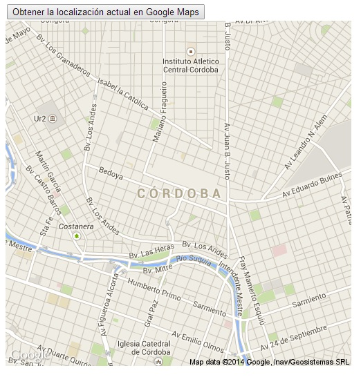

Hemos visto que es muy sencillo obtener la latitud y la longitud empleando HTML5, pero estos dos números brindan poca información si no los posicionamos en un mapa.
El mejor software actualmente sobre mapas es el Google Maps. Veremos ahora como el servicio de Google nos puede generar un mapa en forma dinámica a partir de la latitud y longitud que obtenemos en nuestro sitio web con el consentimiento del visitante.
Confeccionar una aplicación que al presionar un botón obtenga la latitud y longitud de nuestra posición actual y luego solicitar a los servicios de Google Maps un mapa de dicha coordenada.
<!DOCTYPE HTML>
<html>
<head>
<title>Prueba</title>
<script type="text/javascript">
window.addEventListener('load', inicio, false);
function inicio() {
document.getElementById('obtener').addEventListener('click', recuperarLocalizacion, false);
}
function recuperarLocalizacion() {
if (navigator.geolocation) {
navigator.geolocation.getCurrentPosition(mostrarCoordenada);
} else {
alert('El navegador no dispone la capacidad de geolocalización');
}
}
function mostrarCoordenada(posicion) {
var direccion = posicion.coords.latitude + "," + posicion.coords.longitude;
var mapa = "http://maps.googleapis.com/maps/api/staticmap?center="
+direccion+"&zoom=14&size=500x500&sensor=false";
document.getElementById("dato").innerHTML = "<img src='"+mapa+"'>";
}
</script>
</head>
<body>
<input type="button" id="obtener" value="Obtener la localización actual en Google Maps">
<br>
<div id="dato"></div>
</body>
</html>
Cuando ejecutamos el programa, presionamos el botón y luego de dar el consentimiento de obtener nuestra ubicación se muestra una imagen del mapa:
Ahora si los resultados en pantalla son muy claros.
Igual que el problema del concepto anterior primero registramos el evento click para nuestro botón y cuando se presiona procedemos a verificar que se trate de un navegador moderno que acepte el HTML5, con lo que procedemos a llamar al método getCurrentPosition indicando el nombre de la función que recibirá la coordenada:
window.addEventListener('load', inicio, false);
function inicio() {
document.getElementById('obtener').addEventListener('click', recuperarLocalizacion, false);
}
function recuperarLocalizacion() {
if (navigator.geolocation) {
navigator.geolocation.getCurrentPosition(mostrarCoordenada);
} else {
alert('El navegador no dispone la capacidad de geolocalización');
}
}
En la función mostrarCoordenada procedemos a llamar la página staticmap de los servidores de Google pasando como parámetro fundamental la coordenada actual (latitud y longitud), esta página genera una imagen que la mostramos en el div dato:
function mostrarCoordenada(posicion) {
var direccion = posicion.coords.latitude + "," + posicion.coords.longitude;
var mapa = "http://maps.googleapis.com/maps/api/staticmap?center="
+direccion+"&zoom=14&size=500x500&sensor=false";
document.getElementById("dato").innerHTML = "<img src='"+mapa+"'>";
}